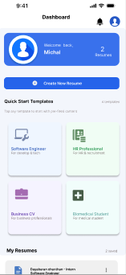
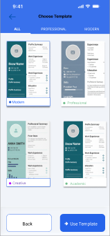
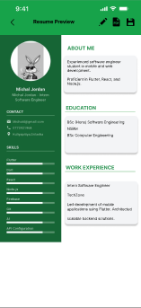
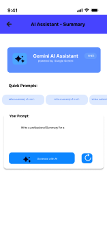
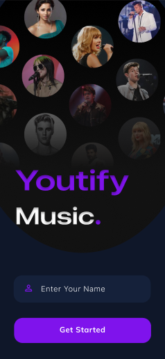
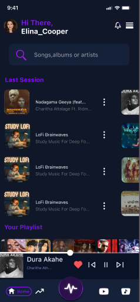
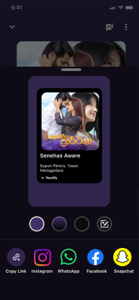

Management Information Systems Undergraduate
Passionate about Business Analysis, Project Management and Quality Assurance. I enjoy turning business requirements into technology solutions.
Download CVI am a Management Information Systems undergraduate with a strong passion for Business Analysis, Project Management, and Software Quality Assurance. I enjoy understanding business needs, analyzing requirements, and helping transform ideas into effective technology solutions that support organizational goals. Through my academic projects and learning experiences, I have developed an interest in requirement gathering, process improvement, project coordination, and quality-focused software practices. I am particularly interested in bridging the gap between business needs and technical solutions by contributing to planning, documentation, communication, and continuous improvement activities. I am also eager to expand my knowledge in areas such as Agile project environments, system analysis, software testing, and digital product development. I enjoy learning new tools, collaborating with teams, and applying my skills to projects that deliver practical value and positive user experiences.
Requirements Gathering, Process Modelling & Stakeholder Analysis
Planning, Agile, Risk Management & Team Coordination
Software Testing, Test Cases & Defect Tracking
Sprint Planning, Product Backlogs & Collaboration
User Stories, BRDs & Functional Specifications
Database Queries, ER Diagrams & Data Analysis
Object-Oriented Programming & Java EE
Cross Platform Mobile Application Development




Designed the system architecture and workflow for an AI-powered mobile application that assists students and job seekers in creating professional, ATS-friendly resumes.
Contributed to requirement analysis, architecture design, and integration planning between Flutter, Firebase, and AI-powered content suggestion services. Collaborated within an Agile team to improve resume quality through intelligent recommendations, template management, and PDF generation features.



Conducted a comprehensive usability evaluation of the Youtify music streaming application using established usability principles and heuristic evaluation techniques.
Identified usability issues, analyzed user experience gaps, and designed improved user interfaces and user journeys using Figma. Proposed design enhancements to improve navigation, accessibility, visual consistency, and overall user satisfaction.
Feel free to reach out through social media or email.
charukasandamini238@gmail.com